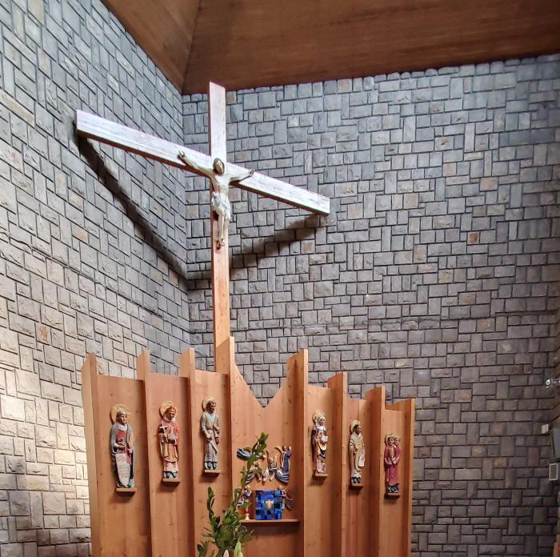
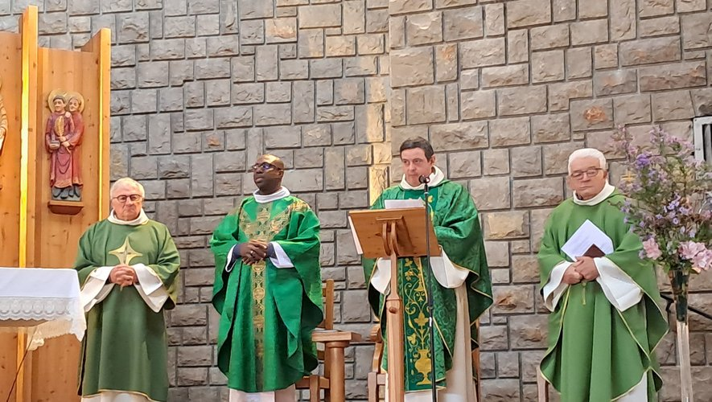
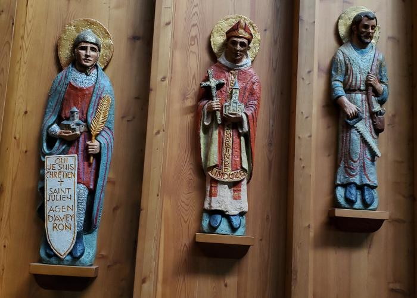
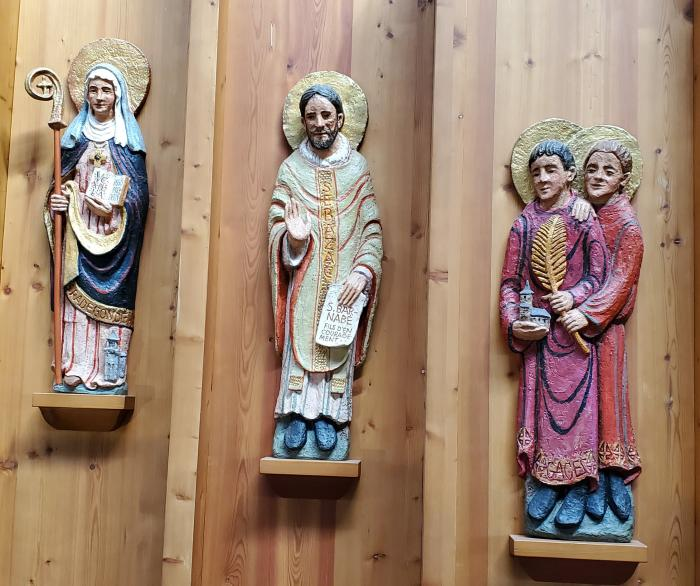
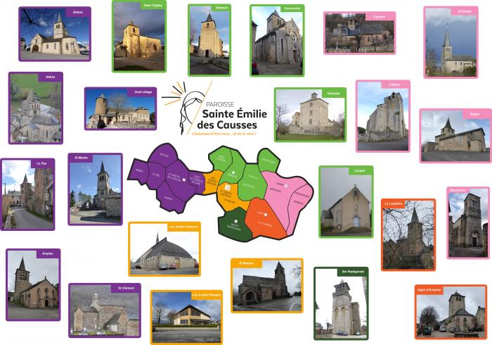

Choisissez d'être vous… et de le vivre !
Chrétiens d'être tous… et de la vivre.
À chaque étape de votre vie, notre communauté est là pour vous accueillir, vous guider et prier avec vous.
Accueillir la vie en Dieu, dimanche après dimanche à Saint-Joseph d'Onet.
✝️Découvrir Jésus, du CP jusqu'à la Première Communion, avec joie.
💍Célébrer votre amour devant Dieu dans l'une de nos belles églises.
🕊️Le pardon de Dieu, signe de son amour infini pour chacun de nous.
🤲Visites, soutien et sacrements pour les personnes malades ou âgées.
🌿Accompagner dans la paix et l'espérance en la Résurrection.
🙏Adoration, Rosaire, Renouveau charismatique… Venez prier avec nous.
❤️Mettre ses talents au service de la communauté et des plus fragiles.
« Choisissez d'être vous… et de le vivre !— Sainte Émilie de Rodat, patronne de notre paroisse
C'est en prenant soin des blessures de l'humanité qu'on prend soin de Dieu et qu'on déploie le meilleur de soi-même. »


Une communauté chrétienne enracinée dans les Causses du Rouergue, rassemblant six villages autour d'un même élan de foi et d'amour.
Sainte Émilie de Rodat, notre patronne, était une éducatrice entièrement dévouée aux enfants et femmes en détresse. Sa devise est la nôtre : prendre soin de soi et prendre soin de Dieu pour donner à notre humanité un visage de fraternité, de paix et d'accueil.
Nos groupes de prière vous accueillent tout au long de l'année dans un esprit de fraternité et de joie.
Jeudi 17h45–18h30 · Église de Sébazac
Vendredi 18h–19h · Oratoire Saint-Joseph
Il est là… je suis là.
Petits groupes priants réunis une fois par mois dans les maisons, en méditant les mystères du Christ à travers Marie.
En savoir plus →Chaque lundi 20h30 · Oratoire Saint-Joseph
Groupe « La source d'eau vive » — louange, Parole, prière de guérison.
Des siècles de prière ont sculpté, peint et embelli nos lieux de culte. Un patrimoine vivant, au service de la beauté qui élève l'âme.

Rétable gauche — Saints patrons
Rétable central — Christ en gloire

Rétable droit — Martyrs de l'Aveyron

La paroisse Sainte Émilie des Causses regroupe six villages du Ruthénois, chacun avec sa propre vie communautaire et ses temps forts liturgiques.
Relais paroissial
Relais paroissial
Maison paroissiale — siège
Relais paroissial
Relais paroissial
Relais paroissial
— Pape François aux jeunes, JMJ 2013